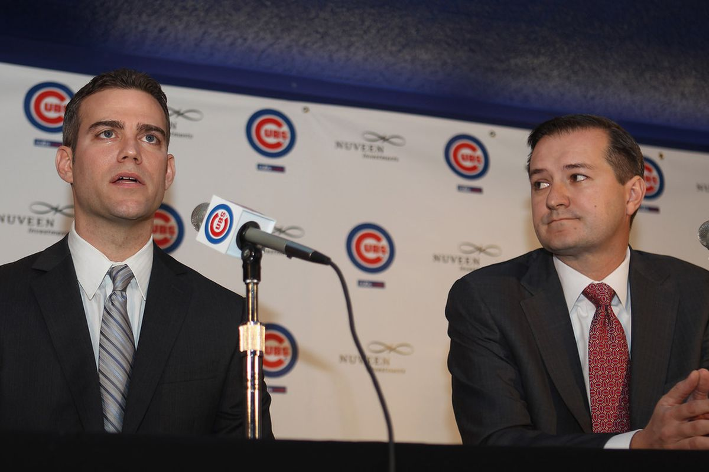
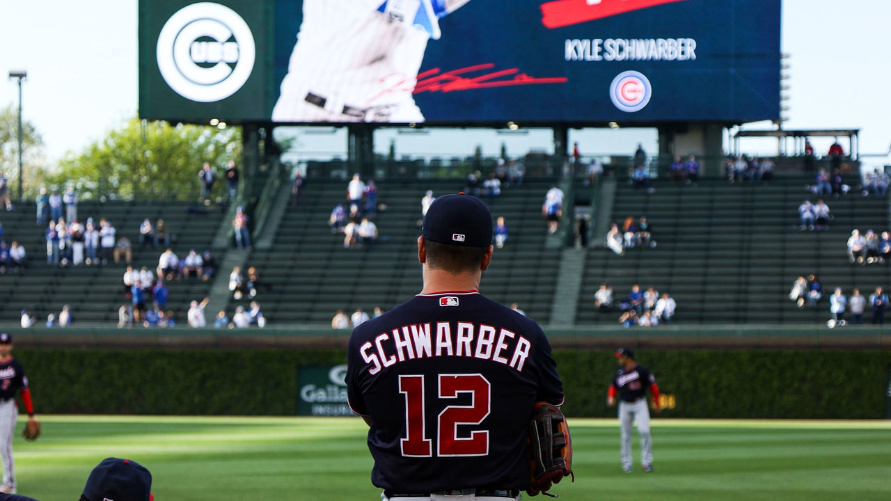

Tom Ricketts’ Chicago Cubs Signal End Of Celebrated Era By Shedding Almost $150 Million In Salaries

Chicago Cubs owner, Tom Ricketts
Photo via NBC Sports (Getty)
The Moves Have Been Made
So much for managerial changes, front-office sound bites and reminders of bygone days. The Chicago Cubs, not so long ago operating like one of baseball’s financial powerhouses, are stunningly headed back to a future they escaped after Tom Ricketts hired Theo Epstein.
Epstein resigned last fall, walking away from the last season of his contract, and on Thursday his replacement, Jed Hoyer, completed a fire sale he quietly put in motion last winter, trading Yu Darvish while allowing Jon Lester and Kyle Schwarber to walk away.
After deadline-day deals for Kris Bryant (Giants), Javier Baez (Mets) and Craig Kimbrel (White Sox), the Cubs have only three players left from the team that made so much sweet magic in 2016, beating the Cleveland Indians in the 10th inning of Game Seven. The volume of the trades on Thursday wasn’t as shocking as it might seem, given that the team’s long-time cornerstone first baseman, Anthony Rizzo, was traded to the Yankees on Wednesday night.
Maybe Kyle Hendricks, Willson Contreras and Jason Heyward can bring their World Series rings to the clubhouse for show-and-tell time.
Hoyer completed eight trades in July, and since December has overseen decisions that erased 15 players from the payroll, including eight who were earning at least $11.5 million.
The group combined to earn $149.31 million in their final season as Cubs. In addition to franchise icons Rizzo, Bryant and Baez, the list of players traded or not re-signed includes Jon Lester, Tyler Chatwood and Jose Quintana.
Ricketts, it turns out, thinks as much like an investment banker for Goldman SachsGS +0.7% as the sentimental fan who met his wife in the bleachers at Wrigley Field. He and Crane Kenney, the president of business operations, talked about “biblical’’ financial losses from Covid-19 pandemic, and have since limited the resources directed toward sustaining a winning team.
While Hoyer may say this is not a total rebuild, it sure looks like one.
The Epstein Rebuild

Epstein speaking at a press conference alongside Ricketts
Photo via Getty
Seldom has a team taken a more abrupt, intentional backward step. The Cubs are currently 50-54 and have had a .570 winning percentage since 2015; the one thing they have failed to do is win big games. They have gone 1-8 in tie-breakers and postseason games after advancing to the National League Championship Series in 2017, becoming an afterthought on a landscape dominated by the Dodgers and Astros.
Before the Epstein-engineered run in 2015-20, the Cubs suffered through five rebuilding years in which they were a combined 118 games under .500, including a 101-loss season in 2012. The player move that did the most in getting them turned around was the deal that brought Rizzo from San Diego for former first-round pitcher Andrew Cashner.
Rizzo, who made his Cub debut on June 26, 2012, was the one player who took the full roller-coaster ride at Wrigley Field. Epstein had been the Boston general manager when Rizzo was drafted in the sixth round of the 2007 draft and had admired his positive approach throughout a recovery from limited state classical Hodgkin’s lymphoma, which briefly deterred his career.
The Red Sox traded Rizzo to San Diego for first baseman Adrian Gonzalez in 2010, and Epstein was thrilled to reunite with him in Chicago. Rizzo signed a seven-year, $41-million deal with two team option years in 2013. The three-time All-Star has been a bargain for the Cubs, who never extended his contract.
Rizzo has been reported to have rejected a five-year, $70-million offer last spring and the Cubs opted to trade him rather than meet his price for an extension. It was a sad piece of business for fans who attended the 2016 World Series parade, when it seemed reasonable that Rizzo, Bryant and Baez — or at least two of the three — would spend a decade or more playing together.
In the early years of the Epstein rebuild, Ricketts essentially gave his front office a blank check. It led to huge contracts for Heyward, Lester, Chatwood, Darvish, Kimbrel and manager Joe Maddon.
Times change. Just ask the unhappy fans who will be at Wrigley Field next weekend, watching Kimbrel pitch for the ascending White Sox.
The Cubs started their trade-dealine dealing on July 15, trading Joc Pederson to Atlanta for 23-year-old first baseman Bryce Ball. But you can argue they set their direction back in the winter, when they non-tendered Kyle Schwarber and signed Pederson to a one-year contract as his replacement in left field.
Schwarber remains extremely popular with Chicago fans but had a down year in 2020, which contributed to the financially driven deal to part ways with him. He had a $7.01 million salary and could have asked for an increase through arbitration. The Cubs had previously declined Jon Lester’s contract option for 2021, demonstrating an adherence to financial discipline over sentimentality.

Schwarber watches his 'Welcome Back' montage on the jumbotron in his first game back at Wrigley Field
It would’ve been out of character for Rizzo to leave Chicago without any drama or emotion.
“This city will be ingrained in my heart for the rest of my life,” Rizzo said.
No one is untouchable, Cubs officials liked to say back when trade rumors were conceptual. If Greg Maddux, Andre Dawson and Fergie Jenkins can each play for four different teams during their Hall of Fame careers, then the Cubs can trade a core player on the verge of free agency with two months remaining in a going-nowhere season. Rizzo understood the risk when he declined a five-year, $70 million extension offer and tabled contract talks at the end of spring training.
The Cubs are covering Rizzo’s salary for the rest of the season, paying roughly $6 million to increase their access to talent. Right-handed pitcher Alexander Vizcaíno and outfielder Kevin Alcántara were ranked ninth and 13th, respectively, in Keith Law’s rankings of New York’s farm system heading into this season. Vizcaíno, 24, has posted a 4.95 ERA in 62 career minor-league games (53 starts). Alcántara, 19, is a 6-foot-6 hitter from the Dominican Republic who had been playing in the Florida Complex League.
Hoyer won’t have much time to reflect on his relationship with Rizzo because he’s still trying to trade Bryant and All-Star closer Craig Kimbrel and collect more prospects. Hoyer knew Rizzo as a Red Sox prospect when he worked at Fenway Park and later pushed for Rizzo to be included in the Adrián González deal when he served as San Diego’s general manager. Trading Andrew Cashner to the Padres in January 2012 and making Rizzo a centerpiece of the Wrigley Field rebuild became a signature move for Theo Epstein, Hoyer and Jason McLeod, the club’s three top baseball executives at the time.
Change could be a good thing for Rizzo. Kyle Schwarber benefitted from a change of scenery after getting non-tendered last winter, hitting 25 home runs for the Nationals, earning his first All-Star selection and playing his way into a trade to the Red Sox. New perspectives and different voices once helped Jake Arrieta transform into a Cy Young Award winner. Players like Cole Hamels and Nick Castellanos thrived off the energy at Wrigley Field in a pennant race. It will be that way for Rizzo at Yankee Stadium.
For a big-market franchise with its own TV network and a business model that relies on 3 million fans showing up to the ballpark each season, the only thing worse than selling at the trade deadline is becoming just another team. Even when the Cubs lost 286 games between 2012 and 2014, they still had Epstein’s aura and the historic quest to end the World Series drought. A new ownership group wanted to put its stamp on the team. The Wrigley Field renovation project became an ongoing source of curiosity and excitement.
Where’s the hook once the trade drama ends and the stars exit the stage? Outside of the uncertainty, this team doesn’t really have an identity right now. The lineup doesn’t put enough pressure on opposing pitchers. The rotation doesn’t have any dependability after Kyle Hendricks. The defense doesn’t play at an exceptional level anymore. The farm system doesn’t have an emerging group of can’t-miss prospects yet.
This is also a nearly blank canvas to create a team for the rest of this decade. On balance, this core stability has been a strength for the Cubs over the last seven seasons, leading to three consecutive trips to the National League Championship Series and a division title as recently as last year. In the moment, winning 95 games in 2018 and then losing in the wild-card round was viewed as underachieving because the Cubs weren’t the Lovable Losers anymore.
“The Mission was accomplished,"
- Anthony Rizzo
“That’s what’s special about what these guys have done here,” Ross said. “Tons of playoff games, the atmosphere that’s created, the way this place looks, just the remodel of the area and the organization — Theo, Jed and Mr. (Tom) Ricketts came in and set out a plan to change things around here. That’s very evident when you show up on a daily basis and have the expectations that these guys bring and the pressure they put on themselves to be great.”
That will be Rizzo’s legacy as a transformational figure at Wrigley Field. Everyone who follows will be measured against his team. Someday, they will see a No. 44 flag flying from a foul pole.
“That’s what matters most — leaving this place better than when I found it,” Rizzo said. “I can say that the mission was accomplished.”
Rizzo holds the World Series trophy at Wrigley Field
Photo via Chicago Tribune
“It’s been almost four years now since all this talk (started),” Rizzo said. “And I don’t really think much has changed in that four years. This could be it, yeah, you’re right. We’ll face that when it happens. But until then, we just enjoy coming in and playing.”
No one can claim to be blindsided here because the Cubs are so consistent and disciplined in their public messaging. The idea of firing Joe Maddon would’ve sounded unbelievable after the Cubs won 95 games in 2018 – while getting only 40 innings from Yu Darvish, a half-season with Brandon Morrow and a 5.30 ERA out of Tyler Chatwood. But Theo Epstein, the Cubs president at the time, gave it credibility by declining to discuss a contract extension with the World Series-winning manager and framing the coming year as a “reckoning.” That lame-duck season ended with a nine-game losing streak in September, the façade of a mutual separation and the hiring of David Ross.